The Exitwise storybook: The Tangled Tower
The Tangled Tower
A fairy tale in 17 worlds
The Duskweaver has knotted the Dawn Door shut and tangled every world with his arrows. Read how Prince Arlo and Pip the owl climb the tower, one painted page at a time. The prologue is open to everyone; each world's chapter opens as you reach it in the arrow puzzle game, in your browser or on Android, and its last pages once you free its guardian.
The knot at the Dawn Door
Long ago, the Dawn Door at the top of the Tower of Worlds opened every morning, and light flowed down through all seventeen worlds.
Then one night the Duskweaver sealed the door with a knot of shadow, and tangled every path below with his arrows.
At the tower's foot, Prince Arlo drew his bow. "Every arrow has a way out," he said. "I'll find them all."
- World 1 Meadow
- World 2 Jungle
- World 3 Volcano
- World 4 Desert
- World 5 Lagoon
- World 6 Mushroom forest
- World 7 Autumn woods
- World 8 Glacier
- World 9 Crystal caves
- World 10 Cherry blossom
- World 11 Clockwork town
- World 12 Coral reef
- World 13 Bayou
- World 14 Candy land
- World 15 Temple ruins
- World 16 Sky islands
- World 17 Starlight
- Finale Through the last door
Seventeen guardians under a curse
At the top of every world, on its last level, a guardian waits above the board, cursed by the Duskweaver. Arrows that fly out of the top hit it; the last hit breaks the curse and frees it. Each one fights in its own way. Tap a card to turn it over.
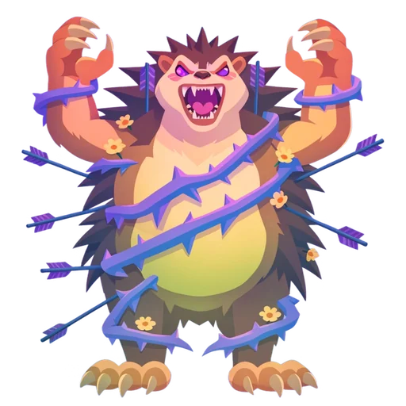
Level 20Bramble
The hedgehog of the Meadow. The first guardian, curled in violet thorns. No shield at all: learn how hits, the health bar and the curse clock work.
- World
- Meadow
- Level
- 20
- Twist
- No ward
Every arrow that flies out of the top of the board hits him. Land enough hits before the curse clock runs out and the thorns fall away. His clock is the most patient of all, so take your time.
How guardian fights work →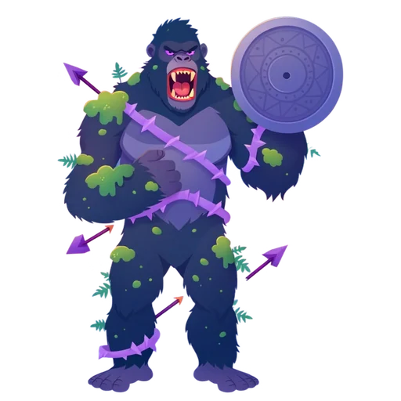
Level 40Mossback
The gorilla of the Jungle. He holds up a shield of solid stone that covers half of the top edge.
- World
- Jungle
- Level
- 40
- Twist
- Half shield
The shield covers one half of the top. After every 4 hits it swings to the other half. An arrow that flies into it bumps and costs a heart, so strike where it isn't.
How guardian fights work →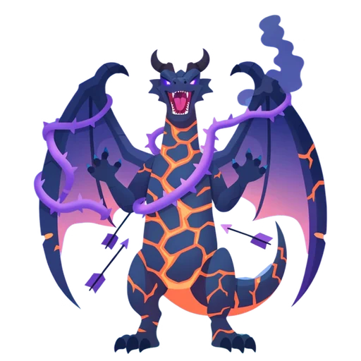
Level 80Cinder
The lava dragon of the Volcano. She guards the crater with a wall of fire that burns in a single colour.
- World
- Volcano
- Level
- 80
- Twist
- Fire of one colour
Her half shield is fire of one colour: arrows of that colour fly straight through it and hit her, any other colour bumps. It changes sides every 4 hits.
How guardian fights work →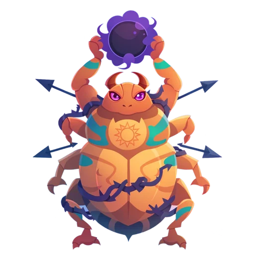
Level 100Rollo
The sun scarab of the Desert. He rolls a cursed sun across the sand, from side to side.
- World
- Desert
- Level
- 100
- Twist
- Sweeping sun
The sun covers a third of the top and rolls on every 4 hits: left, middle, right, and back. Count the hits and aim at the open thirds.
How guardian fights work →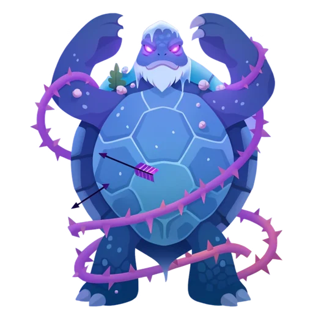
Level 140Old Shellby
The sea turtle of the Lagoon. He drifts under the frozen lagoon, and his spells freeze the path.
- World
- Lagoon
- Level
- 140
- Twist
- Frost
No shield, but twice in the fight, as his health drops, he casts frost: ice blocks fall in your arrows' way. Ice melts as you clear other arrows, so keep moving.
How guardian fights work →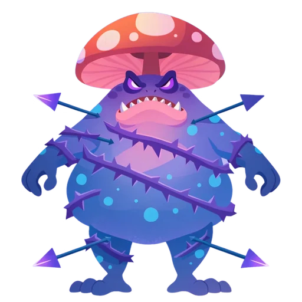
Level 160Puffcap
The toad of the Mushroom forest. He puffs out a cursed shield, and gets quicker when he's hurt.
- World
- Mushroom forest
- Level
- 160
- Twist
- Rage
His half shield swaps every 4 hits, then every 3 once he is below half health. He also has rage: every tap that doesn't hit him counts down, and at zero he strikes and takes a heart. A hit calms him.
How guardian fights work →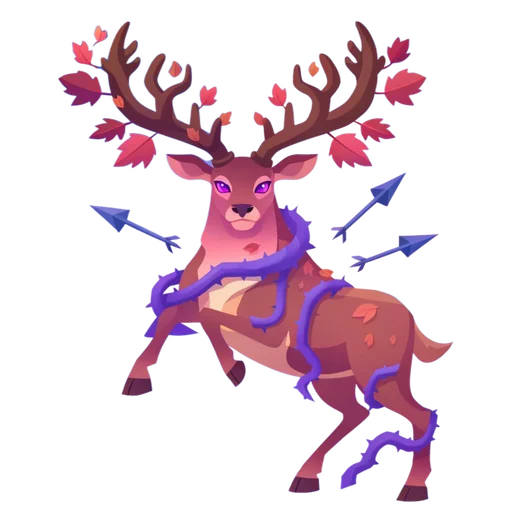
Level 200Oakheart
The great stag of the Autumn woods. A shield of one colour is woven through his antlers.
- World
- Autumn woods
- Level
- 200
- Twist
- Shield of one colour
Only arrows of the shield's colour get through it. Paint tiles in the Autumn woods can recolour an arrow on its way out, so plan which colour reaches the top.
How guardian fights work →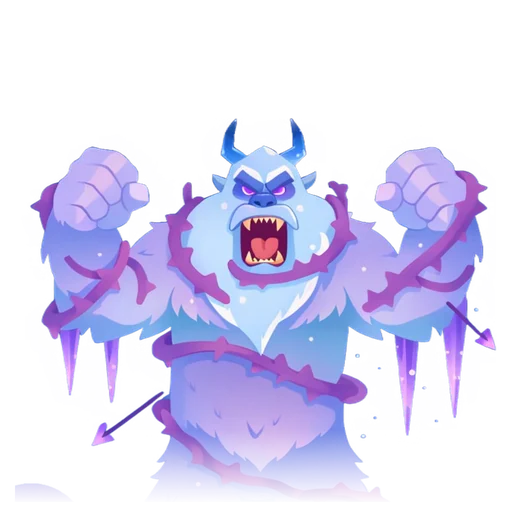
Level 220Frostbeard
The yeti of the Glacier. Half of him hides behind a wall of ice, and his roar freezes the board.
- World
- Glacier
- Level
- 220
- Twist
- Ice wall and frost
His ice wall covers half of the top and moves every 4 hits, and twice in the fight he casts frost that drops ice blocks in your arrows' way.
How guardian fights work →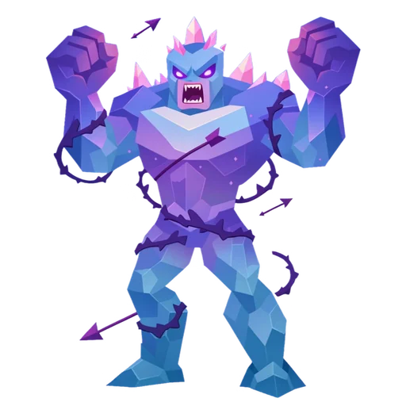
Level 260Prism
The crystal golem of the Crystal caves. His shield shines in two colours, one after the other.
- World
- Crystal caves
- Level
- 260
- Twist
- Two colours
Each time his half shield moves, it changes between two colours. Only arrows of the colour it shows pass through, so the right colour and the right side both matter.
How guardian fights work →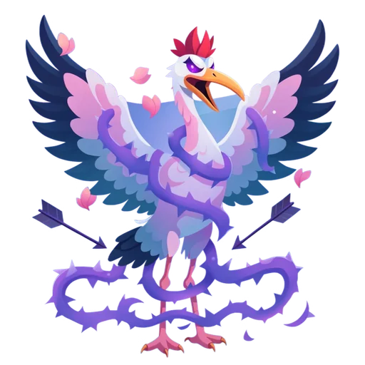
Level 280Petalwing
The crane of the Cherry blossom. Her wings cover almost the whole sky, leaving one narrow gap.
- World
- Cherry blossom
- Level
- 280
- Twist
- Moving gap
Her wings ward almost all of the top, leaving one gap that drifts on every 4 hits. Thread your arrows through it. She has rage too, so don't tap at random.
How guardian fights work →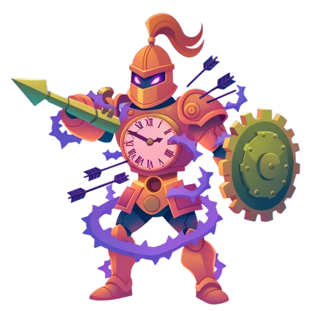
Level 320Sir Sprocket
The clockwork knight of the Clockwork town. Only he still marches when every clock in town has stopped.
- World
- Clockwork town
- Level
- 320
- Twist
- Gear shield
His gear shield sweeps across the top a third at a time, every 3 hits. Look for the switches: every machine in Clockwork town has a way to open it.
How guardian fights work →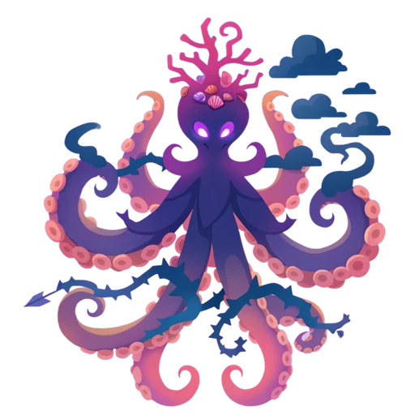
Level 340Inkwell
The octopus of the Coral reef. Eight cursed arms, and clouds of ink that swallow the paths.
- World
- Coral reef
- Level
- 340
- Twist
- Ink
Twice in the fight he squirts ink: a cloud covers some arrows, and they have to wait until it clears after a few more arrows leave. Count your shots.
How guardian fights work →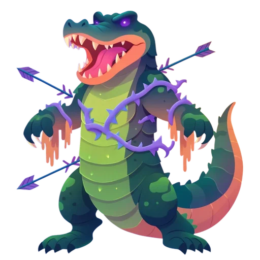
Level 380Snapjaw
The alligator of the Bayou. His two shields close in from both sides like jaws.
- World
- Bayou
- Level
- 380
- Twist
- Closing jaws
The shields start at both ends of the top and close in every 4 hits, so the gap gets smaller as the fight goes on. He has rage as well: shoot fast, before they bite.
How guardian fights work →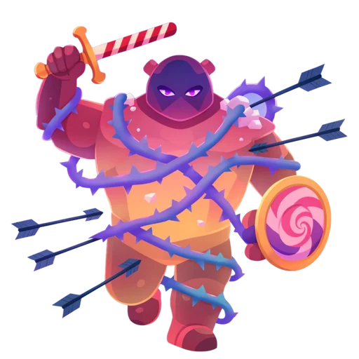
Level 400Gumdrop
The gummy knight of the Candy land. His shield changes colour every time it moves.
- World
- Candy land
- Level
- 400
- Twist
- Changing colour
Watch the colour, not the knight: his half shield moves every 4 hits and takes on a new colour each time, and only arrows of that colour slip through.
How guardian fights work →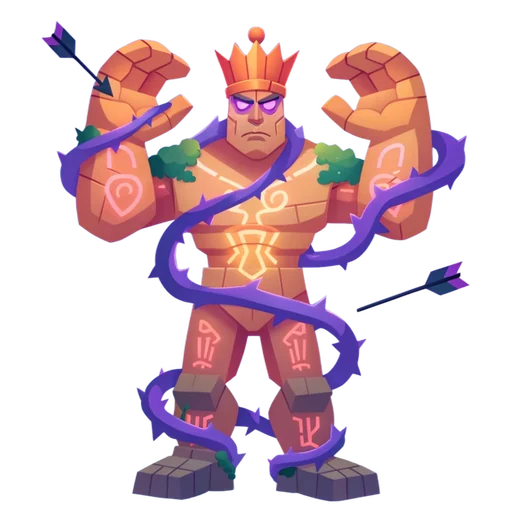
Level 440The Stone Sentinel
The stone sentinel of the Temple ruins. Two great stone hands rise from the floor to guard its face.
- World
- Temple ruins
- Level
- 440
- Twist
- Two stone hands
The hands move like a slow puzzle, one shielding while the other opens, and change every 4 hits. Twice in the fight it casts frost as well.
How guardian fights work →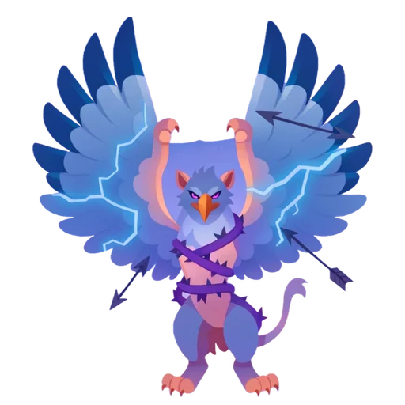
Level 460Stormwing
The thunder griffin of the Sky islands. He circles between the islands, his shield flashing from place to place.
- World
- Sky islands
- Level
- 460
- Twist
- Never still
His half shield moves after every 2 hits, the quickest of all. He casts frost twice and ink once on the way down.
How guardian fights work →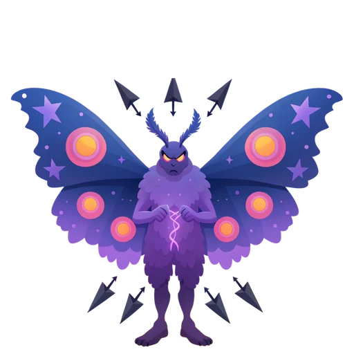
Level 500The Duskweaver
The moth sorcerer of the Starlight. He sealed the Dawn Door. Every knot he tied, he tied twice.
- World
- Starlight
- Level
- 500
- Twist
- Every trick
The last fight, on level 500, uses everything: a moving gap that shifts every 3 hits, then every 2, rage from a third of the way in, frost and ink. Free him and the Dawn Door opens.
How guardian fights work →
How do I unlock the chapters?
Play Exitwise. The prologue and the Meadow's opening are open from the start. Each world's chapter opens when you reach that world, and its last pages when you free its guardian on the world's last level. The finale waits at level 500.
Why are my chapters locked on this page?
This page reads your progress from Exitwise in your browser on this site, in the same browser. Play a few levels there and come back: the chapters you have reached open here too. Progress from the Android app shows in the app's own Storybook, the Story button on the map.
Can I read the story in the game?
Yes. A world's pages play over the map when you reach it and when you free its guardian, and you can skip them at any time. Tap Story on the map to read any chapter again. If you'd rather not see them, turn off "Show story pages" in Settings; the Storybook still fills up.
Who are Prince Arlo and Pip?
Arlo is a young knight archer with a golden sun bow; he believes every arrow has a way out. Pip is a little owl who carries a lantern holding the last spark of dawn. Together they climb the Tower of Worlds to open the Dawn Door.
Does the story have music?
Seven songs, from the prologue's music box to the guardians' march and the Dawn Door. Press the music button in the book to hear them as you read, or listen to the whole Exitwise soundtrack.
What happens after level 500?
The finale and the epilogue open. The story ends, but the game goes on: the shadows of old guardians come back as echoes on later levels, and Prince Arlo takes up his bow again.
Free the next world
Every arrow puzzle you clear brings Prince Arlo closer to the Dawn Door. Free on Android and in your browser.